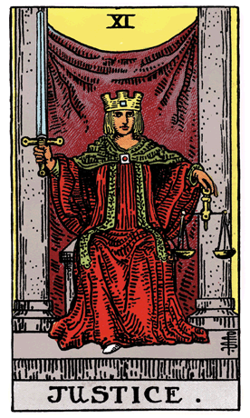

Continuing our journey through the Rider-Waite Tarot Deck, we encounter Justice, a symbol of balance, fairness, and moral clarity. In this card, a figure sits on a stone throne, holding a sword in one hand and scales in the other, representing the impartiality and discernment required to uphold justice.
The scales in Justice symbolize the weighing of actions and consequences, emphasizing the need for fairness and objectivity in decision-making. The sword represents the power of discernment and the ability to cut through illusion to reveal the truth. The figure's red robe signifies passion and the commitment to justice, while the square on her crown represents grounding and the adherence to universal principles.
At the figure's feet, a small white shoe peeks out from under her robe, symbolizing the integration of spiritual principles with earthly matters. The two pillars behind her signify the dual nature of justice—balancing opposing forces to find a harmonious resolution.
In a tarot reading, Justice often emerges as a call to seek balance, fairness, and moral clarity in one's decisions and actions. It suggests a time for evaluating situations objectively, weighing the pros and cons, and making choices that align with universal principles of justice and ethics.
Justice encourages individuals to approach matters with a sense of fairness and impartiality, setting aside personal biases and emotions. The card reminds us that actions have consequences, and decisions should be made with consideration for the greater good.
The sword in Justice also signifies the need to cut through falsehoods and illusions to reveal the truth. It emphasizes the importance of clarity and transparency in all dealings, ensuring that decisions are based on accurate information and a clear understanding of the situation.
From a psychological perspective, Justice represents the integration of one's values and ethical principles into decision-making. It signifies the importance of aligning actions with a strong moral compass and seeking fairness in interpersonal relationships.
In a reversed position, Justice may indicate a lack of balance, unfairness, or the consequences of unethical decisions. It could suggest a need for introspection, reevaluation of choices, and a commitment to rectify imbalances. In such cases, the reversed Justice serves as a reminder to realign with principles of fairness and ethical conduct.
Archetypally, Justice aligns with the archetype of the Judge—a figure who upholds universal laws, ensures fairness, and brings about resolution. Justice embodies the principles of accountability and ethical conduct that contribute to a just and harmonious society.
Societally, Justice encourages communities to uphold principles of fairness, equality, and ethical conduct. It emphasizes the importance of creating systems that ensure justice for all, regardless of individual differences.
In conclusion, Justice in the Rider-Waite Tarot Deck calls us to seek balance, fairness, and moral clarity in our actions and decisions. It encourages individuals to uphold ethical principles, cut through illusions, and strive for justice in all aspects of life, contributing to a harmonious and just society.
```